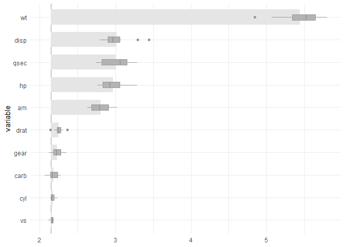
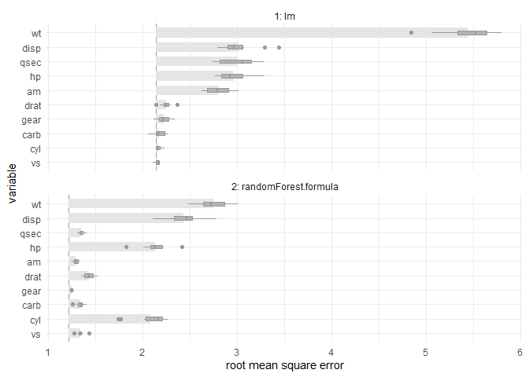

The goal of celavi is to join the main features of two functions
that I use really often vip::vi_permute and DALEX::model_parts. Both functions do the same task of calculate drop out loss via permutation, but they have different features and approach.
In the case of vip::vi_permute is more direct to use (imho), have an implementation for parallel processing, can be used with a sample_frac parameter. Otherwise, in the case of DALEX::model_parts I like the user can give custom metrics as a loss functions, the base line and full model references values, and the plots.
To that features I added some features to my personal taste.
- Add progress bars to the sequential and parallel process using
progress::progress_barandprogressr::progress - Give the possibility of to the user to access to the raw data.
- Verbose information using
cli::cli_alert_info.
References
The vip package from koalaverse, and the DALEX package from MI². In particular these links are awesome: https://koalaverse.github.io/vip/articles/vip.html and https://ema.drwhy.ai/featureImportance.html#featureImportanceR.
Please, visit the links and used that awesome tools!
Installation
You can install the development version of celavi from GitHub with:
# install.packages("devtools")
devtools::install_github("jbkunst/celavi")Example
library(celavi)
lm_model <- lm(mpg ~ ., data = mtcars)
set.seed(123)
vi <- celavi::variable_importance(lm_model, data = mtcars, iterations = 10)
#> ℹ Using all variables in data.
#> ℹ Trying extract response name using `formula`.
#> ℹ Using `mpg` as response.
#> ℹ Using root mean square error as metric.
#> ℹ Using `base::identity` as sampler.
#> ℹ Using `predict.lm` as predict function.
dplyr::glimpse(vi)
#> Rows: 120
#> Columns: 3
#> $ variable <chr> "am", "am", "am", "am", "am", "am", "am", "am", "am", "am", …
#> $ iteration <int> 1, 2, 3, 4, 5, 6, 7, 8, 9, 10, 1, 2, 3, 4, 5, 6, 7, 8, 9, 10…
#> $ value <dbl> 2.718690, 2.813226, 2.629602, 3.006321, 2.810651, 2.780096, …
nrow(vi)
#> [1] 120
# nrow(vi) = (ncol(mtcars) - 1 + 2) * iterations
plot(vi)
And compare with other model.
rf <- randomForest::randomForest(mpg ~ ., data = mtcars)
vi_rf <- celavi::variable_importance(rf, data = mtcars, iterations = 10)
#> ℹ Using all variables in data.
#> ℹ Trying extract response name using `formula`.
#> ℹ Using `mpg` as response.
#> ℹ Using root mean square error as metric.
#> ℹ Using `base::identity` as sampler.
#> ℹ Using `predict.randomForest` as predict function.
plot(vi, vi_rf)
From the previous chart we can tell the random Forest have small (better) RMSE and is less affected in terms of predictability by removing variables, wt variable for example.